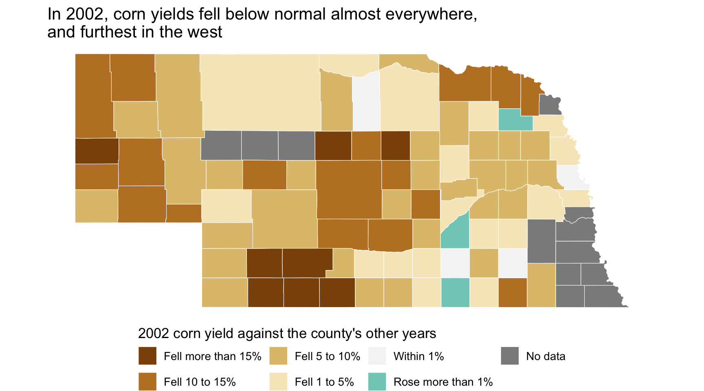

Ex-9-3: Communicating with Maps, with an AI Assistant
Abstract
Spatial Data
This is an in-class exercise. Before class, work through the lecture 09-3: Communicating with Maps (and lecture 04-1 on figures, whose figure standard you will need). In class, you work through the worksheet with an AI assistant drawing the maps. Your job is everything the AI cannot do: deciding the message and the reader, choosing among designs, and checking that the map shows every place it should.
Setup
- Download the worksheet, ex-9-3.qmd, and the data files 9-3-ne-counties.gpkg and 9-3-ne-corn-yield.csv.
- Use the
ch9-practiceR Project from exercise 9-1, or make one: a folder with two subfolders,dataandanalysis. You may ask the AI how to do this. - Copy the two data files into
ch9-practice/data, and the worksheet intoch9-practice/analysis. - Have your copy of the figure standard (lecture 04-1) and the map standard (lecture 09-3) open; you will paste both into requests.
- Ask the AI to install the
sfandtidyversepackages if you have not already. - Open the worksheet and start at Task 1.
It worked if
Typing here::here() in the Console prints the path to ch9-practice and nothing longer.
If here::here() prints a path ending in analysis, the .Rproj file was not recognised. here only accepts a .Rproj file whose first line starts with Version:, which every project created in RStudio (File, New Project) has.
Answers
Open each one only after you have tried the task. For the design questions there is rarely one right answer; the answers explain which choices serve the message and why.
Task 1: Look and predict
What you should find
A. One county in one year: county code, county name, year, corn yield in bushels per acre. 568 rows, years 2000 to 2006.
B. The county codes have leading zeros (001), so they must stay text to match countyfp in the county layer. (Here read_csv() keeps them as text, type character; read.csv() would not.)
C. Nebraska has 93 counties, so 7 years of every county would be 651 rows. There are 568, so some counties or years are missing. Only 82 different county codes appear at all.
D. A drought year should show yields below each county’s usual level. A raw 2002 yield cannot show that on its own: irrigated eastern and central counties have higher yields every year.
Task 2: Build the table the map is drawn from
What you should find
| Check | Expected | Got |
|---|---|---|
| places drawn | 93 | 93 |
| places drawn more than once | 0 | 0 |
| places with a value | your prediction | 81 |
| places without one (No data) | your prediction | 12 |
The discovery. 12 counties have no 2002 yield: Cass, Dakota, Grant, Hooker, Johnson, Lancaster, Nemaha, Otoe, Pawnee, Richardson, Sarpy, Thomas. Most of them sit together in the south-east corner of the state, around Lincoln and Omaha. A map drawn from the yield table alone would show a state with its south-east corner cut off, and a reader could take that for something about the drought.
Of the 81 counties with a value, 76 were below their own average over the other years, 2000, 2001 and 2003 to 2006. The differences run from -22.7% to 2.5%.
Which side of the join comes first matters. Starting from the county layer, left_join(counties, yield_2002), keeps all 93 counties and gives the 12 without a value NA. Starting from the yield table, left_join(yield_2002, counties), keeps only the 81 counties in the table, and the result is an ordinary table rather than a layer: geom_sf() then stops with “stat_sf() requires the following missing aesthetics: geometry”.
Task 3: Message, designs, choice
What a good answer looks like
A message the data supports: “In 2002, corn yields fell below normal in almost every county, and furthest in the west.” Counties whose centre lies west of 100°W averaged -11.3% against -6.5% in the east. Your sentence may differ; it must be something the table supports and be about where.
The designs, and what each makes easy to see:
- Raw 2002 yield, one hue light to dark. Shows where yields are high (120 to 187 bushels per acre), which mostly reflects irrigation and soil, not the drought. It does not serve this message.
- Percent difference from normal, one hue light to dark. Shows where yields fell most. Good for “furthest in the west”, but a reader cannot tell which counties were above normal.
- Percent difference from normal, two hues diverging from 0. Shows above and below normal, with white at no change. Almost every county is on the “below” side, which is itself the first half of the message. Usually the best fit.
A choice of 2 or 3, justified in terms of the message, is a good answer. A choice of 1 needs a different message.
Design 3, with the counties without data named, looks like this:
The classes are not symmetric around zero, because almost every county fell and none rose by more than 3%: symmetric classes would leave the “rose” colours almost unused and squeeze every fall into two shades. The middle is still “Within 1%”, in white, the browns and the blue-green come from the two ends of one diverging palette, and the no-data counties are a darker grey so they cannot be read as “no change”.
Whatever the design, every county without data should be in a grey the scale does not use (a darker grey on a diverging scale) and labelled “No data”. If the AI left them out, the map standard was not followed.
Task 4: Critique and improve a map
What you should find
What is wrong, by the checklist and the standards:
- It maps the raw yield, which does not show the drought (the message).
inner_join()keeps only counties with a 2002 yield, so 12 counties are missing and the south-east corner is cut off (map standard item 4).- A rainbow scale for an amount: no order a reader can see, and hard for colour-blind readers (map standard item 3).
- Longitude and latitude axes and a grey background (map standard item 5).
- The legend is titled
corn_yield, a column name (figure standard item 1). - Dark default borders compete with the fill (map standard item 6).
- No title stating the finding.
The improved map should start from all 93 counties with left_join() (or a join from the county layer), show the percent difference with a diverging scale centred at 0, name the “No data” counties, and have no axes. A version with all of these, side by side with the original, is what the request asks for.
Task 5: Check the map against its data
What you should find
The counts are those of Task 2: 93 drawn, 0 drawn more than once, 81 with a value, 12 without.
Lowest five (furthest below normal): Red Willow (-22.7%), Scotts Bluff (-21.2%), Frontier (-21.1%), Blaine (-19.8%), Garfield (-19.7%). On the map they should be the darkest “below normal” colour; three of them are in the west.
Highest five: Nuckolls (2.5%), Hamilton (1.2%), Wayne (1.1%), Washington (0.6%), Clay (0.2%). 5 counties are above 0. On a diverging map none of them should be brown: the ones above 1% are on the “rose” side, the rest in the white middle.
If a county named here has a colour that does not match its value, the join went wrong: check that countyfp and county_code are both text with their leading zeros.